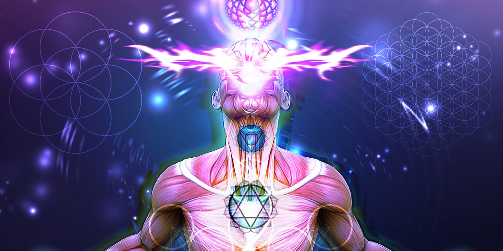

Возникновение жизни на Земле
Первичный бульон — термин, введённый советским биологом Александром Ивановичем Опариным. В 1924 году он выдвинул теорию о возникновении жизни на Земле через превращение, в ходе постепенной химической эволюции молекул, содержащих углерод, в первичный бульон.
Теория первичного бульона
Первичный бульон предположительно существовал в мелких водоёмах Земли 4 млрд лет назад. Он состоял из аминокислот, полипептидов, азотистых оснований, нуклеотидов. Он образовался под воздействием электрических разрядов, высокой температуры и космического излучения. При этом атмосфера Земли в то время не содержала кислорода.
В 1923 году советский учёный Александр Иванович Опарин предположил, что в условиях первобытной Земли органические вещества возникали из простейших соединений — аммиака, метана, водорода и воды. Энергия, необходимая для подобных превращений, могла быть получена или от ультрафиолетового излучения, или от частых грозовых электрических разрядов — молний. Возможно, эти органические вещества постепенно накапливались в древнем океане, образуя первичный бульон, в котором и зародилась жизнь.
По гипотезе А. И. Опарина, в первичном бульоне длинные нитеобразные молекулы белков могли сворачиваться в шарики, «склеиваться» друг с другом, укрупняясь. Благодаря этому они становились устойчивыми к разрушающему действию прибоя и ультрафиолетового излучения. Происходило нечто подобное тому, что можно наблюдать, разлив ртуть: рассыпавшаяся на множество мелких капелек ртуть постепенно собирается в капли чуть побольше, а потом — в один крупный шарик. Белковые «шарики» в «первичном бульоне» притягивали к себе, связывали молекулы воды, а также жиров. Жиры оседали на поверхности белковых тел, обволакивая их слоем, структура которого отдалённо напоминала клеточную мембрану. Этот процесс Опарин назвал коацервацией, а получившиеся тела — коацерватными каплями, или просто коацерватами.